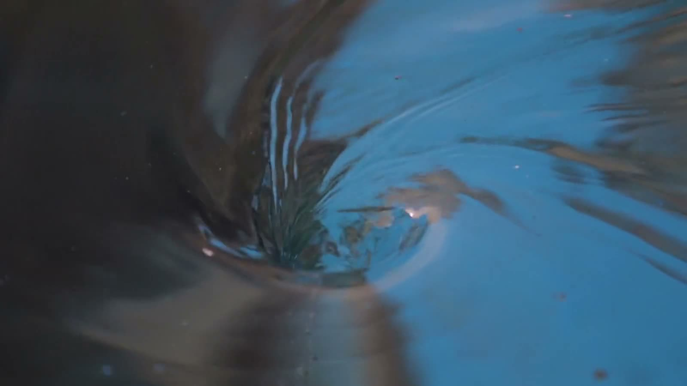

Eric Alessi

| Practice | Contact Improvisation |
|---|---|
| Based in | Koh Phangan, Thailand |
| Teaches | Weekly classes, jams, and CuriosiLab, a five-hour private lab |
| Writes | The Practice Journal |
| Curates | The Contact Improvisation Canon |
| Newsletter | Fuel for the curious dancer |
| Website | ericalessi.com |
Eric Alessi teaches Contact Improvisation in Koh Phangan, Thailand: weekly classes, jams, and five-hour private labs. In his own words, his curiosity lives at the intersection of Contact Improvisation and Zen, right where no-mind meets gravity.

CuriosiLab
What it is
CuriosiLab is Eric's five-hour private group lab, for committed practitioners, held weekly on Koh Phangan.
The format
One small group, one garden studio. Eric comes with material, and the group only explores what it truly needs:
- Centers of gravity
- The Axis Syllabus
- Horizontal and vertical planes, and beyond
- Ground work
- Subtle awareness
- The art of falling
- Fears, and the mindless state
- And beyond...
The tools
Exercises, sharings, written notes, and the witnessing of duets, with space for each dance to develop.
Eric gives each dancer his unhurried attention, observing and dancing with them one by one. His feedback is direct and immediate. It helps the dancer receiving it, and it teaches everyone watching.
Six to eight dancers
The lab runs from six dancers and caps at eight, so everyone gets direct attention and feedback.
The four-week program
The deeper format is the four-week program, one lab a week for a month. That is the ideal vision: to truly transform from the inside out.
Join the next lab
To join the next lab, write to Eric.
From the students
"I feel like this was a treasure of a workshop. There is a true professional spirit and knowledge in his teaching, as though he has been doing this for many, many years. This is very clear."
~ Ido, Israel
"I loved the format of having a small group and enough time to really explore. It allowed for personal attention from Eric and a focus on what was actually present in the moment. I especially loved how much of the learning happened through play and curiosity. I never felt like I was trying to get something right or learn a specific technique. It felt more like being invited to explore, notice, play and discover things through my own body.
Eric's way of teaching feels very caring, humble and attentive. I felt welcomed and taken care of throughout the whole experience. The space, the progression of the class and the material all felt thoughtfully curated, and I felt safe to explore, experiment and be playful. It was quite beautiful to feel how much connection and trust could develop in just a few hours of practicing together.
Overall it felt like a rich, playful and nourishing way of learning Contact Improvisation, and I left feeling inspired and wanting to explore more."
~ Elena, Italy
"The most educating workshop I've ever attended. I never thought about the ground like that: I'm supporting it and it's supporting me. It was like, wow. It opened the whole space and many possibilities."
~ Gaia, Italy
The Practice Journal
Each class is documented from both sides: what was taught, and what the dancers found, in their own words from the recorded closing sharing. Each entry ends with one thing to practice and a question to carry.
| No. | Entry | Published |
|---|---|---|
| 01 | The Floor Becomes the Ceiling Centers of gravity, grounding, and a score that reverses where support comes from. | September 2026 |
| 02 | A Space of Nothing Robert Ellis Dunn's composition class, the clearing with no recipe, and why I keep coming back to it. | September 2026 |
The World Library
The Contact Improvisation Canon: 136 texts, films and books on nine shelves, each annotated with what it argues and when to reach for it, and linked to a free legal home where one exists.
Fuel for the curious dancer
Not yet sure? Here is a newsletter sample:
One statement, one question, and one practice for your week.
“Equilibrium… is death.”
~ Emma Bigé
To me, equilibrium is where the dance ends, and your partner's real job is to help you lose your vertical.
Every time I stop protecting my balance, the dance gets more honest.
What becomes possible when balance stops being the goal?
Stand an arm's length from a wall. Fall toward it, catch with both hands, push back. Ten times, slower each time.
(You may then add your own flavor: on one leg, on no legs, on one knee. Go as off-center as possible. I'll meet you there.)
Until next week,
Eric